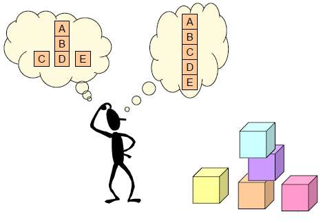

Aplicaciones de Ordenamiento
¿Qué son las Aplicaciones de Ordenamiento ?
Es un programa o script que organiza datos (como números, cadenas u objetos) en un orden específico, ya sea ascendente o descendente, utilizando algoritmos de ordenamiento. Estos algoritmos pueden ser básicos, como burbuja (bubble sort) , o más ordenación rápidas o ordenación por fusión.

¿Por qué es importante?
Dado que a menudo pueden reducir la complejidad de un problema, los algoritmos de ordenación son muy importantes en informática. Estos algoritmos tienen aplicaciones directas en algoritmos de búsqueda, algoritmos de bases de datos, métodos divide y vencerás, algoritmos de estructura de datos y muchos más.